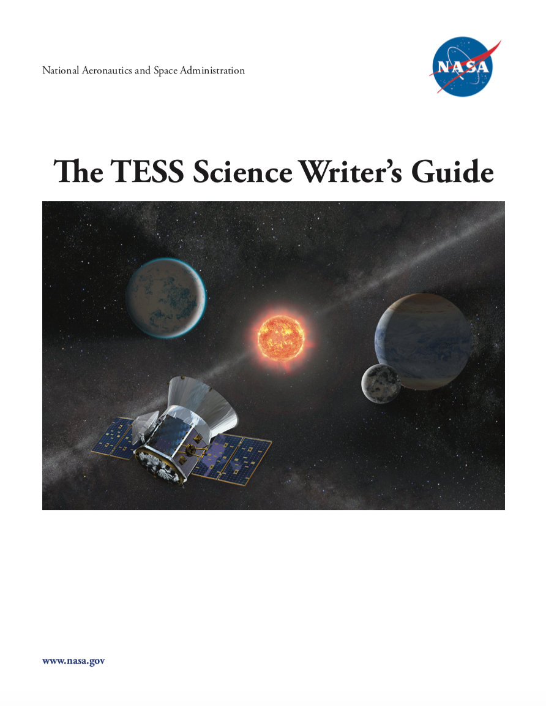
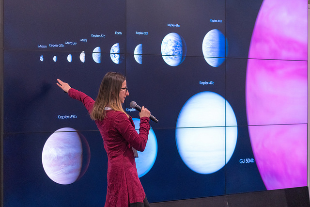
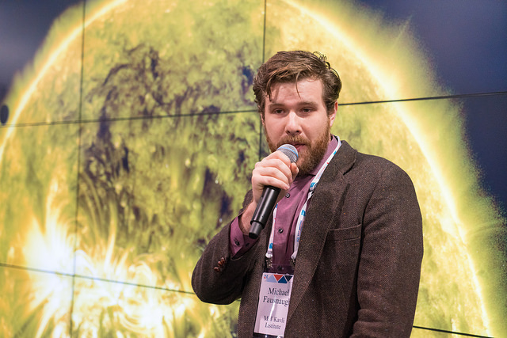
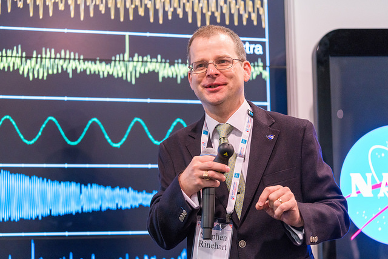

TESS team members and scientists participated in a number of successful events at the 231st American Astronomical Society meeting in National Harbor, MD, in January 2018. TESS activities included a joint evening splinter session on NASA's TESS and K2 missions, a special seminar for science writers, and a number of talks, posters, and hyperwall presentations. Team members from MIT and NASA Goddard were also on hand to answer questions about the mission and feasibility of planned observations at a TESS booth in the exhibition hall, and there was much excitement for the upcoming launch throughout the meeting.
A special TESS Science Writers Guide was out together

TESS Science Writer's Guide available in PDF.

NASA Hyperwall Stories: Finding New Worlds with the Transiting Exoplanet Survey Satellite, Diana Dragomir (MIT)

NASA Hyperwall Stories: TESS Mission Overview, Michael Fasnaugh (MIT)

NASA Hyperwall Stories: TESS Guest Investigator Program, Stephen Rinehart (NASA GSFC)

TESS team members staffing the TESS Booth.

TESS team members staffing the TESS Booth.